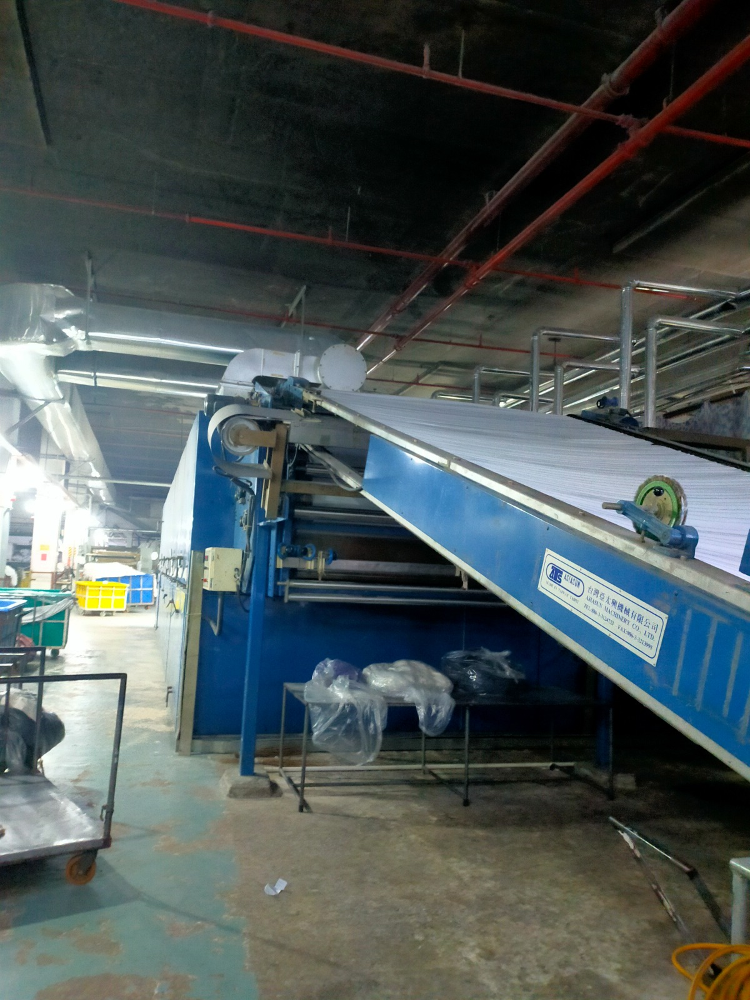
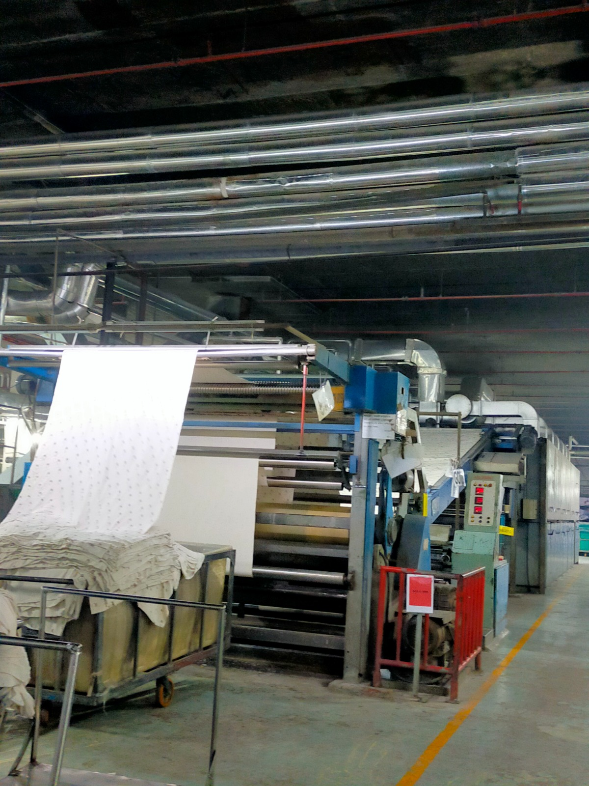

How we make
Our manufacturing
process
Six integrated stages — from yarn on the rack to inspected, export-ready woven fabric at our Narayanganj mill. Every lot keeps its batch identity through to the packed roll.
-
01
Yarn preparation

Ring-spun yarn is racked by lot and checked for count and cleanliness before it is beamed.
-
02
Warping

Yarn is wound onto warp beams and sized before it goes on the loom.
-
03
Weaving

Warping, sizing, and weaving on air-jet and rapier looms — poplin, twill, oxford, and plain.
-
04
Inspection

Fabric is checked on the inspection line for defects, width, and construction against the buyer spec.
-
05
Dyeing & finishing

Fabric is dyed and finished on the range — including mercerizing and soft finishes when the spec calls for them.
-
06
Final QA & dispatch

Finished fabric is folded, shade-checked, and held with its lot documents before shipment.
Quality is not a final gate — it is built into every stage from fiber blend to packed roll.
-
6 Process stages
-
100% Lot traceability
-
24/7 Mill operations
-
4 QA checkpoints
Tour Our Mill
Schedule a facility visit or virtual walkthrough with our Narayanganj production team.